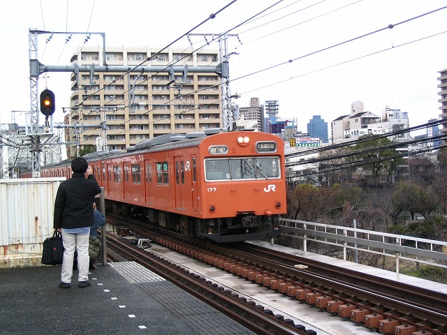

フォトバトル＜鉄夫編＞です。

鉄子がテキトーにコメントつけます。あんたら、とにかく写真みたいんやろ、オレンジ欲しいんやろ、
オレンジ補給したら駅のトイレで小躍りせんですむんやろ、な、これでどやどやどや～！（ヤケクソ）

一枚目はこれかな。よかったね、北京氏！ やはり意気込みが違うね。誰よりも前で撮影。
北京氏好みの写真？これですな「全編成」ってのは。あたしにゃー区別つかんので二つ連続でどうぞ。
お、高低がそろうか？
鉄夫、タイミング悪い～
鉄夫、ちゃっかり北京氏撮影シーンを撮影。もー鉄オタまるだしじゃん、北京氏。
なんや、ウチのんも撮ってたんかい！裏切り者ぉ～！
さて、車両以外に、鉄夫はホーム下の撮影をしておりました。
はい、鉄夫、解説頼む。
右側の橋台は明治28年、城東線の玉造・大阪間が開通したときに架設された橋（昭和20年代に撤去）の跡。左側は大正3年に複線化されたときの橋（昭和30年代に撤去）で、当時は外回りの線路であったそうな（下記の書籍より）。
後日談：
最近、旭屋書店の聖地で鉄夫がこんな本を買ってきてました。
買った夜、本を広げてプチ講習＆質問を始める鉄夫。 「何いぃ？わからんのかああ？！」 鉄子半泣き。。。。
都島